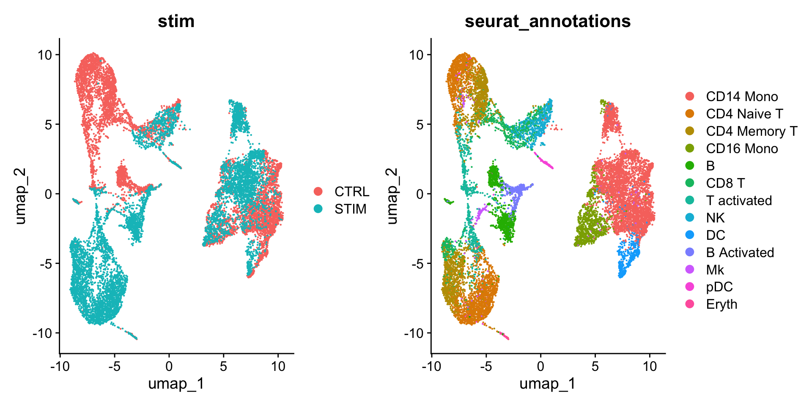

```{r}
#| eval: false
library(Seurat)
library(SeuratData)
InstallData("ifnb")
ifnb <- LoadData("ifnb")
```12 整合（integration）
原文：Introduction to scRNA-seq integration
原文发布日期：2023年10月31日
Tip
本篇主要介绍来自不同样本类型的单细胞数据的整合。对于如何整合不同测序技术的单细胞数据集，参考Seurat官方文档：Integrative analysis in Seurat v5。
Integration of single-cell sequencing datasets, for example across experimental batches, donors, or conditions, is often an important step in scRNA-seq workflows. Integrative analysis can help to match shared cell types and states across datasets, which can boost statistical power, and most importantly, facilitate accurate comparative analysis across datasets. In previous versions of Seurat we introduced methods for integrative analysis, including our ‘anchor-based’ integration workflow. Many labs have also published powerful and pioneering methods, including Harmony and scVI, for integrative analysis.
数据整合的目标：
The following tutorial is designed to give you an overview of the kinds of comparative analyses on complex cell types that are possible using the Seurat integration procedure. Here, we address a few key goals:
Identify cell subpopulations that are present in both datasets
Obtain cell type markers that are conserved in both control and stimulated cells
Compare the datasets to find cell-type specific responses to stimulation
12.1 数据读取和分层
从本地下载好的数据读取：
An object of class Seurat
14053 features across 13999 samples within 1 assay
Active assay: RNA (14053 features, 0 variable features)
2 layers present: counts, datahead(ifnb@meta.data, 5) orig.ident nCount_RNA nFeature_RNA stim seurat_annotations
AAACATACATTTCC.1 IMMUNE_CTRL 3017 877 CTRL CD14 Mono
AAACATACCAGAAA.1 IMMUNE_CTRL 2481 713 CTRL CD14 Mono
AAACATACCTCGCT.1 IMMUNE_CTRL 3420 850 CTRL CD14 Mono
AAACATACCTGGTA.1 IMMUNE_CTRL 3156 1109 CTRL pDC
AAACATACGATGAA.1 IMMUNE_CTRL 1868 634 CTRL CD4 Memory Ttable(ifnb$stim)
CTRL STIM
6548 7451 
The object contains data from human PBMC from two conditions, interferon-stimulated and control cells (stored in the stim column in the object metadata). We will aim to integrate the two conditions together, so that we can jointly identify cell subpopulations across datasets, and then explore how each group differs across conditions
In previous versions of Seurat, we would require the data to be represented as two different Seurat objects. In Seurat v5, we keep all the data in one object, but simply split it into multiple ‘layers’. To learn more about layers, check out our Seurat object interaction vignette.
Important
Seurat v5 assays store data in layers. These layers can store:
raw, un-normalized counts (
layer='counts')normalized data (
layer='data')z-scored/variance-stabilized data (
layer='scale.data').
split the RNA measurements into two layers one for control cells, one for stimulated cells:
library(Seurat)
ifnb[["RNA"]] <- split(ifnb[["RNA"]],
f = ifnb$stim) # 按照meta.data中的“stim”列进行分割
ifnbAn object of class Seurat
14053 features across 13999 samples within 1 assay
Active assay: RNA (14053 features, 0 variable features)
4 layers present: counts.CTRL, counts.STIM, data.CTRL, data.STIM现在可以发现ifnb被分为了4个layer，此前是2个layer（counts和data）：

12.2 不进行整合的情况下的数据处理
进行标准的数据处理流程：
ifnb <- NormalizeData(ifnb)
ifnb <- FindVariableFeatures(ifnb)
ifnb <- ScaleData(ifnb)
ifnb <- RunPCA(ifnb)
ifnb <- FindNeighbors(ifnb, dims = 1:30, reduction = "pca")
ifnb <- FindClusters(ifnb,
resolution = 2,
cluster.name = "unintegrated_clusters")Modularity Optimizer version 1.3.0 by Ludo Waltman and Nees Jan van Eck
Number of nodes: 13999
Number of edges: 555146
Running Louvain algorithm...
Maximum modularity in 10 random starts: 0.8153
Number of communities: 26
Elapsed time: 1 secondsifnb <- RunUMAP(ifnb,
dims = 1:30,
reduction = "pca",
reduction.name = "umap.unintegrated")分别按照样本分组（“stim”）和细胞聚类情况（“seurat_clusters”）着色绘制UMAP图：
可以发现：The resulting clusters are defined both by cell type and stimulation condition, which creates challenges for downstream analysis.
12.3 进行数据整合
We now aim to integrate data from the two conditions, so that cells from the same cell type/subpopulation will cluster together.
We often refer to this procedure as intergration/alignment. When aligning two genome sequences together, identification of shared/homologous regions can help to interpret differences between the sequences as well. Similarly for scRNA-seq integration, our goal is not to remove biological differences across conditions, but to learn shared cell types/states in an initial step-specifically because that will enable us to compare control stimulated and control profiles for these individual cell types.
The Seurat v5 integration procedure aims to return a single dimensional reduction that captures the shared sources of variance across multiple layers, so that cells in a similar biological state will cluster. The method returns a dimensional reduction (i.e. integrated.cca) which can be used for visualization and unsupervised clustering analysis. For evaluating performance, we can use cell type labels that are pre-loaded in the seurat_annotations metadata column.
# 整合，比较耗时间，进度条会一直显示0%直至运算完成
ifnb_integrated <- IntegrateLayers(ifnb,
method = CCAIntegration,
orig.reduction = "pca",
new.reduction = "integrated.cca", # 整合后新的降维数据的名称
verbose = FALSE)可以看到经过整合的Seurat对象的降维（“reduction”）中多出了整合后的降维（“integrated.cca”）：

目前的RNA assay的counts和data数据仍然按照“CTRL”和“STIM”被分成了4个layer。因此，我们通过JoinLayers进一步合并这些layers：
# 目前RNA assay包含的layers
Layers(ifnb_integrated[["RNA"]])[1] "counts.CTRL" "counts.STIM" "data.CTRL" "data.STIM" "scale.data" # 合并RNA assay的layers
ifnb_integrated[["RNA"]] <- JoinLayers(ifnb_integrated[["RNA"]])
# 再次检查RNA assay包含的layers
Layers(ifnb_integrated[["RNA"]])[1] "data" "counts" "scale.data"可以看到，目前的RNA assay只包含三个layers：data”、“counts”、“scale.data”。
Warning
Once integrative analysis is complete, you can rejoin the layers - which collapses the individual datasets together and recreates the original counts and data layers. You will need to do this before performing any differential expression analysis. However, you can always resplit the layers in case you would like to reperform integrative analysis.
整合后重新聚类、降维
# 重新聚类
ifnb_integrated <- FindNeighbors(ifnb_integrated,
reduction = "integrated.cca", #更改降维来源为"integrated.cca"
dims = 1:30)
ifnb_integrated <- FindClusters(ifnb_integrated, resolution = 1)Modularity Optimizer version 1.3.0 by Ludo Waltman and Nees Jan van Eck
Number of nodes: 13999
Number of edges: 590406
Running Louvain algorithm...
Maximum modularity in 10 random starts: 0.8448
Number of communities: 18
Elapsed time: 1 seconds# 重新降维
ifnb_integrated <- RunUMAP(ifnb_integrated,
dims = 1:30,
reduction = "integrated.cca") #更改降维来源为"integrated.cca"
# Visualization：
DimPlot(ifnb_integrated,
reduction = "umap",
group.by = c("stim", "seurat_annotations"))可以看到和 Figure fig-未整合 相比，在整合后，细胞就只按照细胞类型进行聚类了。
也可以按照刺激条件（“stim”）绘制分面图，分别展示刺激组和对照组的细胞分群情况：
DimPlot(ifnb_integrated, reduction = "umap", split.by = "stim")可以看到，和上面的结论一致，两种条件下的细胞分群基本一致。
12.4 执行SCTransform标准化流程之后的整合
As an alternative to log-normalization, Seurat also includes support for preprocessing of scRNA-seq using the SCTransform() workflow（ sec-sctransform ）. The IntegrateLayers function also supports SCTransform-normalized data, by setting the normalization.method parameter, as shown below.
不进行整合的情况下的数据分析
rm(list = ls())
# 重新载入原始的Seurat对象ifnb
library(Seurat)
ifnb <- readRDS("data/seurat_official/pbmc_ifnb.rds")
# 同样先拆分数据集，然后进行无整合情况下的降维
ifnb[["RNA"]] <- split(ifnb[["RNA"]], f = ifnb$stim)
ifnb <- SCTransform(ifnb, verbose = FALSE)
ifnb <- RunPCA(ifnb)
ifnb <- RunUMAP(ifnb, dims = 1:30)
DimPlot(ifnb,
reduction = "umap",
group.by = c("stim", "seurat_annotations"))
可以看到，如果不进行整合，不同样本（STIM vs. STIM）的细胞类型差异很大。
进行整合
同样通过IntegrateLayers函数进行数据整合，只不过需要将默认的标准化方法由”LogNormalize”指定为”SCT”（normalization.method = "SCT"）：
ifnb_integrated <- IntegrateLayers(ifnb,
method = CCAIntegration,
normalization.method = "SCT",
verbose = F)
# 整合后重新合并RNA的layers
Layers(ifnb_integrated[["RNA"]])[1] "counts.CTRL" "counts.STIM" "data.CTRL" "data.STIM" ifnb_integrated[["RNA"]] <- JoinLayers(ifnb_integrated[["RNA"]])
Layers(ifnb_integrated[["RNA"]])[1] "data" "counts"
可以看到经过整合的Seurat对象的降维（“reduction”）信息中多出了整合后的降维（“integrated.dr”）。
整合后聚类
ifnb_integrated <- FindNeighbors(ifnb_integrated,
reduction = "integrated.dr", #更改降维来源为"integrated.dr"
dims = 1:30)
ifnb_integrated <- FindClusters(ifnb_integrated,
resolution = 0.6)Modularity Optimizer version 1.3.0 by Ludo Waltman and Nees Jan van Eck
Number of nodes: 13999
Number of edges: 527905
Running Louvain algorithm...
Maximum modularity in 10 random starts: 0.9058
Number of communities: 19
Elapsed time: 1 secondsifnb_integrated <- RunUMAP(ifnb_integrated,
dims = 1:30,
reduction = "integrated.dr")
DimPlot(ifnb_integrated,
reduction = "umap",
group.by = c("stim", "seurat_annotations"))
可以看到和 Figure fig-sctransform_未整合 相比，整合后在样本间的细胞类型基本均匀分布。
保存整合后的Seurat对象
saveRDS(ifnb_integrated, file = "output/seurat_official/ifnb_integrated.rds")